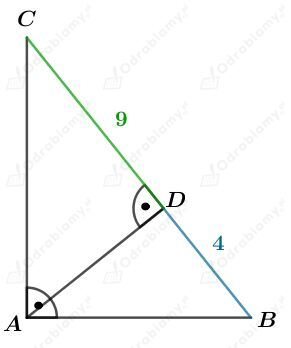
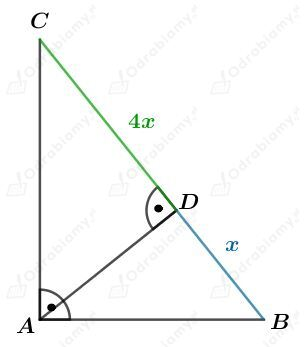
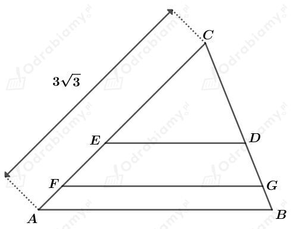

Dany jest trójkąt prostokątny ABC (rysunek w podręczniku).
Rozważmy trójkąt prostokątny CAD. Wiemy, że |AD|=3 oraz |CD|=4.
Korzystając z twierdzenia Pitagorasa dla tego trójkąta mamy:
Zauważmy, że na mocy cechy podobieństwa KKK, trójkąty ABC, ACD i CBD są podobne.
Mamy stąd
czyli
Mamy również
| Długość promienia okręgu wpisanego w trójkąt prostokątny Dany jest trójkąt prostokątny o przyprostokątnych długości a i b oraz o przeciwprostokątnej długości c. Długość promienia r okręgu wpisanego w ten trójkąt opisana jest wzorem: |
Niech r1 będzie długością promienia okręgu wpisanego w trójkąt ABC. Mamy:
Niech r2 będzie długością promienia okręgu wpisanego w trójkąt CAD. Mamy:
Niech r3 będzie długością promienia okręgu wpisanego w trójkąt CDB. Mamy:
Rysunek:

Zauważmy, że na mocy cechy podobieństwa KKK, trójkąty ABD i ADC są podobne. Mamy stąd
czyli
Wyznaczmy pole tego trójkąta. Mamy:
Korzystając z twierdzenia Pitagorasa dla trójkąta ABD otrzymujemy:
Korzystając z twierdzenia Pitagorasa dla trójkąta ADC otrzymujemy:
Wyznaczmy obwód tego trójkąta. Mamy:
Rysunek:

Zauważmy, że na mocy cechy podobieństwa KKK, trójkąty ABD i ADC są podobne. Mamy stąd
czyli
a)
Wyznaczmy pole trójkąta ABD. Mamy:
Wyznaczmy pole trójkąta ADC. Mamy:
Wyznaczmy stosunek pól tych trójkątów. Mamy:
Odp. Stosunek pól trójkątów, na które dana wysokość dzieli ten trójkąt wynosi 1:4.
b)
Korzystając z twierdzenia Pitagorasa dla trójkąta ABD otrzymujemy:
Korzystając z twierdzenia Pitagorasa dla trójkąta ADC otrzymujemy:
Wyznaczmy stosunek długości przyprostokątnych trójkąta ABC. Mamy:
Odp. Stosunek długości przyprostokątnych tego trójkąta wynosi 1:2.
Zauważmy, że na podstawie cechy podobieństwa KKK, trójkąty ABE i ACD są podobne. Mamy stąd:
czyli
Mamy również:
czyli
Rysunek:

Odcinki ED i FG są równoległe do podstawy AB tego trójkąta.
Z treści zadania wiemy, że
Zauważmy zatem, że
Na mocy cechy podobieństwa KKK, trójkąty ABC, FGC i EDC są podobne. Niech k będzie skalą podobieństwa tych trójkątów. Mamy więc:
czyli
Otrzymujemy stąd zatem:
Wiedząc, że
mamy:
więc
Mamy również: